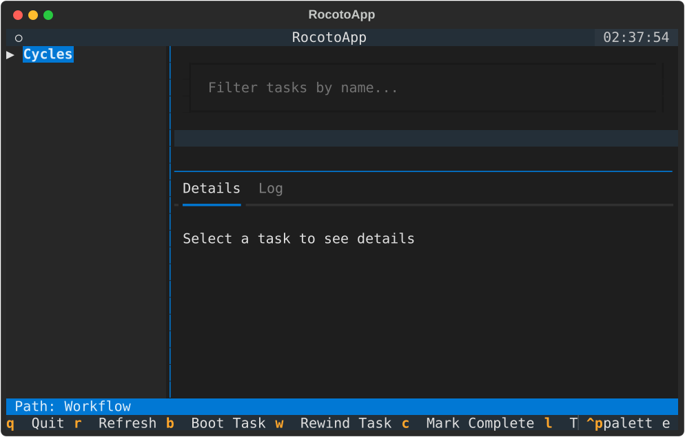

Tutorial: Monitoring Your First Workflow
This tutorial will walk you through a typical session using RocotoViewer to monitor a running workflow.
Scenario
Suppose you have a workflow named TutorialWorkflow that has been running for several hours. You want to check the status of the 12Z cycle and see why a specific task failed.
Step 1: Launch RocotoViewer
Open your terminal and run RocotoViewer pointing to your workflow files:
When the application starts, you will see the Cycle Tree on the left with all cycles initially collapsed.

Step 2: Navigate and Expand Cycles
The Cycle Tree allows you to navigate the hierarchy of your workflow.
- Keyboard: Use the
UpandDownarrow keys to highlight a cycle. PressEnterto expand or collapse the selected cycle. - Mouse: Click on a cycle name or the expansion icon next to it to toggle its state.
Expand the 202310271200 (the 12Z cycle). You will see the tasks associated with that cycle appear underneath it.
RocotoViewer uses icons and colors to help you quickly identify task states: * ✅ SUCCEEDED: Task finished successfully. * 🏃 RUNNING: Task is currently executing. * 💀 DEAD: Task failed and will not be retried automatically. * 🕒 QUEUED: Task is waiting for resources in the batch system. * ⌛ WAITING / PENDING: Task is waiting for dependencies to be met.

Step 3: Filter for the Failed Task
In the main view, you see a list of tasks. You are looking for a task named run_model_A.
- Press
Tabto move focus to the Filter Input box at the top (or click it with your mouse). - Type
model.

The Cycle Tree will now only show tasks containing "model" in their name, making it easier to find what you need across all cycles.
Step 4: Inspect Task Details
Find the run_model_A task for the 202310271200 cycle in the tree. You notice its state is DEAD.
- Select: Click on the task in the tree or use arrow keys to highlight it.
- Observe: The Selected Task Status table and the Details tab will populate with information specific to this task instance.
The Details Panel shows the Resolved Command and Log Paths (Stdout/Stderr). RocotoViewer automatically resolves <cyclestr> tags based on the selected cycle.
Step 5: View Live Logs
If a task is running or has failed, you often want to see the output.
- With the task selected, press
lto switch to the Log tab. - The tab will show a live
tailof the log file.

You can see the "Segmentation fault" error right in the TUI!
* Press f to toggle Log Follow mode (autoscroll to the bottom).
Step 6: Explore Complex Dependencies
RocotoViewer helps you visualize complex dependency logic. In our example, the verify task has a multi-part dependency:
<task name="verify" cycledefs="standard">
<dependency>
<and>
<taskdep task="archive"/>
<!-- Depends on archive from the PREVIOUS cycle -->
<taskdep task="archive">
<cycleoffset>-12:00:00</cycleoffset>
</taskdep>
</and>
</dependency>
</task>
When you select the verify task, the Details Panel lists these dependencies, helping you understand why a task might be stuck in a PENDING state.
Step 7: TUI Navigation Cheat Sheet
| Key | Action | Context |
|---|---|---|
Up/Down |
Move Selection | Cycle Tree |
Enter |
Expand/Collapse or Select | Cycle Tree |
Tab |
Switch Focus | Between Tree, Filter, and Tabs |
l |
Toggle between Details/Log | Global |
f |
Toggle Log Follow | While Log tab is active |
r |
Manual Refresh | Global |
q |
Quit | Global |
Step 8: Rewind and Monitor
After fixing the underlying issue (e.g., fixing a data issue that caused the Segfault), you can signal Rocoto to retry.
With run_model_A selected, press w to "Rewind" the task. RocotoViewer will send the command to Rocoto. Wait for the auto-refresh (every 30s) or press r to see the state change to QUEUED or RUNNING.
(Note: In this demo version, actions show a notification in the UI).